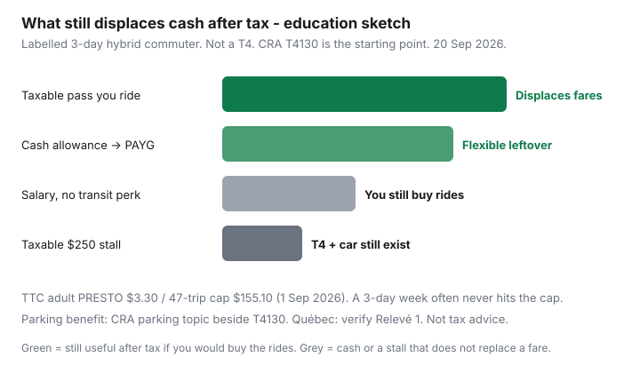

Transportation · Employer benefits
How employer transit subsidies work in Canada: taxable-benefit basics for employees
Employees leave money on the table in two directions. They skip a transit subsidy because “it will just get taxed,” or they opt in, ride twice a month, and meet the benefit again on a T4. Canadian employer transit help is usually a taxable benefit or allowance, not a magic untaxed pass. The federal public-transit tax credit is long gone (2017). What remains is payroll treatment plus whatever corporate PRESTO, Compass, or Opus product your workplace already negotiated. This page is a question list, not a filing position.
Pair it with hybrid negotiation if the pass does not match your office days, and with car TCO if the competing perk is a parking stall. Fare products: TTC capping, GO PRESTO, Compass.
Education only — not personalized tax advice. CRA and Revenu Québec care about your plan documents. A colleague’s T4 is not a ruling. Ask payroll or a qualified tax professional before you change withholdings or opt in.
Key takeaways
- Start with CRA’s employers’ guide — T4130, Employers’ Guide – Taxable Benefits and Allowances — and the Agency’s parking-benefit topic. Do not start with a US “commuter pre-tax” article. Canada is not that system.
- A pass or cash transit allowance is often employment income. Taxed is not the same as worthless: if you would buy the rides anyway, a subsidy still displaces after-tax cash.
- Workplace parking is a separate CRA topic and is often taxable at fair-market value. “Free stall” can be a T4 line.
- Québec can diverge. Verify Relevé 1 treatment; do not copy a federal blog into a Montréal payroll form.
- Corporate PRESTO / Compass products can be cheaper than the public monthly even after tax. Ask whether the employer is buying a pass or handing you cash.
Federal taxable-benefit starting point (high-level CRA)
T4130 is written for employers, which is useful for employees: it is the book payroll is supposed to follow. High-level, not a substitute for the current PDF:
- Benefits and allowances are generally taxable unless a specific CRA exception says otherwise.
- A transit pass provided to you, or an allowance meant for transit, is usually included in income at the amount the employer paid or the cash you received.
- There is no general federal “hide this from the T4 because it is green” switch. The old federal public transit tax credit does not apply to 2026 returns.
- Reimbursements against your receipts can still be taxable if they are a personal commuting cost. Employment-related travel (to a client site, not home-to-office) is a different analysis — do not mix the two on a Slack thread.
Read the live T4130 and the parking page on canada.ca. If your employer cites a different interpretation, ask them to show the paragraph. You want the box number and the dollar they will report, not a vibe.
Québec transit-pass treatment differences to verify
Revenu Québec does not automatically clone every federal benefit rule. Montréal and Québec City employers may have a past practice, a union letter, or a Relevé 1 code that is not what your Toronto friend described. Verify:
- Whether the Opus / employer pass is reported, and on which RL-1 box.
- Whether any Québec-only credit, deduction, or exemption still exists for your tax year — do not rely on a 2019 blog.
- Whether a taxable federal benefit is still taxable in Québec (often yes) and at what value.
If HR cannot answer Québec and federal in the same email, that is your cue to ask a tax professional who files T1s and TP-1s. This guide will not invent a 2026 Revenu Québec rate.
Questions to ask HR and payroll before you opt in
- Is this a loaded pass, a taxable cash allowance, or a reimbursement up to a cap against receipts?
- What dollar will appear on the T4 (and RL-1 if you work in Québec), and in which box?
- Is withholding increased, or will I be surprised at filing?
- Can I opt out? What happens on unpaid leave, parental leave, or a three-month secondment?
- If I work hybrid, do I still get the full pass? Can I take stored-value or a smaller product?
- Is there a corporate PRESTO, Compass, or Opus SKU that is cheaper than the public monthly?
- If I already have U-Pass or a student pass, will you stack or refuse?
Get the answers in writing. Verbal “it’s not a big deal” is how January feels expensive.
Compare subsidy vs higher salary vs parking privilege
| Offer | When it tends to win | When it tends to lose |
|---|---|---|
| Taxable transit pass you would buy | You ride enough to hit a TTC cap ($155.10) or a Compass monthly; employer may get a corporate rate | Two office days a month; you would have used PAYG at ~$3.30/trip |
| Taxable cash allowance | You can buy the cheaper product (fare cap, stored value) and keep the residual | You spend it as unmarked cash and still drive |
| Higher salary, no transit perk | You already have U-Pass, walk, or a partner’s pass; you want RRSP/TFSA room more than a card | You will buy the pass anyway and the employer had a cheaper corporate SKU |
| “Free” parking stall | Transit cannot hit the site and the stall is not valued on the T4 | CRA-style FMV on a $250 stall plus insurance and fuel — see the parking topic in T4130’s neighbourhood |

PRESTO and Compass corporate products employees may access
Large employers sometimes issue or reload:
- PRESTO corporate or bulk products in the Greater Golden Horseshoe — useful if TTC capping or GO loyalty is your real math. Do not also AutoLoad a personal 12-Month ($143) on a second card.
- Compass employer programs in Metro Vancouver. The Compass guide already notes some workplaces load product; U-Pass BC at $47.85/month (1 Sep 2026–31 Aug 2027) beats every adult monthly if you still qualify as a student.
- Opus employer or STM products in Montréal — confirm the titre and whether it is transferable.
A corporate pass that is already paid is the cheapest answer in the pass-vs-PAYG guides: take it, tap the same card, and do not buy a retail monthly on top. If the “corporate product” is just a PDF telling you to create a personal PRESTO, that is a suggestion, not a subsidy.
Documenting your commute costs for negotiations
Before you walk into compensation season, keep one month of:
- PRESTO / Compass / Opus statements or app history (paid trips, not transfers).
- Parking receipts or the stall’s posted market rent.
- Fuel fill-ups if the alternative is driving (StatsCan’s 14 Sep 2026 Daily put August gasoline +22.8% YoY — your litres still matter more than the headline).
- Time door-to-desk, because hybrid proposals need hours as well as dollars.
That packet is how you ask for a subsidy that matches three office days instead of a five-day pass you will not use. It is also how you refuse a taxable parking stall you do not want.
This is education — not personalized tax advice
Nothing on this page is a CRA ruling, a Revenu Québec interpretation, or a recommendation to opt in or out. Taxable-benefit law turns on the written plan, your province, and facts (allowance vs reimbursement vs pass). If the dollar on the T4 will change your RRSP room, GST credit, or Ontario Trillium math, talk to someone who can sign a return. We write commuter systems, not T1s.
Employee rule: ask for the box and the dollar first. Then compare after-tax value to the fare product you would actually ride. Skip US commuter-benefit explainers — they describe a different statute.
Sources & date stamps
- CRA, T4130 Employers’ Guide – Taxable Benefits and Allowances — federal starting point for benefits and allowances (read the current edition on canada.ca).
- CRA, parking as a taxable benefit — employer-provided automobile/parking topic on canada.ca.
- TTC fare capping (1 Sep 2026): 47 paid trips; adult PRESTO $3.30; cap $155.10; remaining Adult 12-Month $143; post-secondary monthly $128.15.
- TransLink U-Pass BC $47.85/month from 1 Sep 2026–31 Aug 2027.
- Statistics Canada, The Daily, 14 Sep 2026 — August 2026 CPI; gasoline +22.8% YoY.
Frequently asked questions
Are employer-paid transit passes a taxable benefit in Canada?
Often yes at the federal level. CRA’s employers’ guide on taxable benefits and allowances (T4130) is the starting point: a transit pass or allowance your employer provides is generally employment income unless a specific exception applies. Confirm your plan with payroll or a tax professional — this page will not file your T4.
Is free workplace parking taxable?
Often yes when the stall has a fair-market value and is not a scramble/insufficient-parking exception. CRA publishes a parking topic beside T4130. A $250 downtown stall “included” can still appear on a T4. Ask HR how they value it.
Does Québec treat transit subsidies differently?
Revenu Québec has its own benefit and deduction rules. Do not assume a federal answer is the Relevé 1 answer. Ask payroll which box is used and whether a Québec-only treatment applies to your pass or allowance.
Should I take a transit subsidy or ask for salary instead?
Compare after-tax value. A $150 taxable pass that you would buy anyway can still win versus $150 of salary if the employer also negotiates a cheaper corporate product. A subsidy you will not ride is a taxable gift you did not want. Parking vs transit is a separate TCO fight.
What should I ask HR before I enrol?
Is it a pass, a taxable allowance, or a reimbursement against receipts? Which T4/RL-1 box? Can I opt out? What happens on hybrid weeks or leave? Is there a corporate PRESTO or Compass product? Get it in writing.